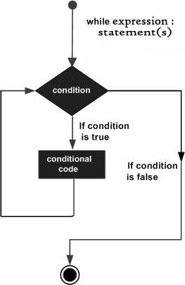

while 语法
while 判断条件:
代码块
我们发现，while循环的语法结构和if语句的结构很相像，那么这两个之间有什么区别呢？
if 判断条件:
代码块
区别在于，if语句只会执行一次判断条件，条件成立以后，只会执行一次代码块；而while语句，会先执行一次判断条件，如果条件成立，会执行一次代码块，代码块执行完成以后，会再次判断条件语句，如果还成立，将会再执行代码语句... 直到最后条件不成立。

示例
输出十遍hello world
i = 1
while i <= 10:
print('hello world')
i += 1 # 一定要记得让 i += 1, 否则会造成死循环
练习
- 求1~100的和
- 求1~100所有偶数的和